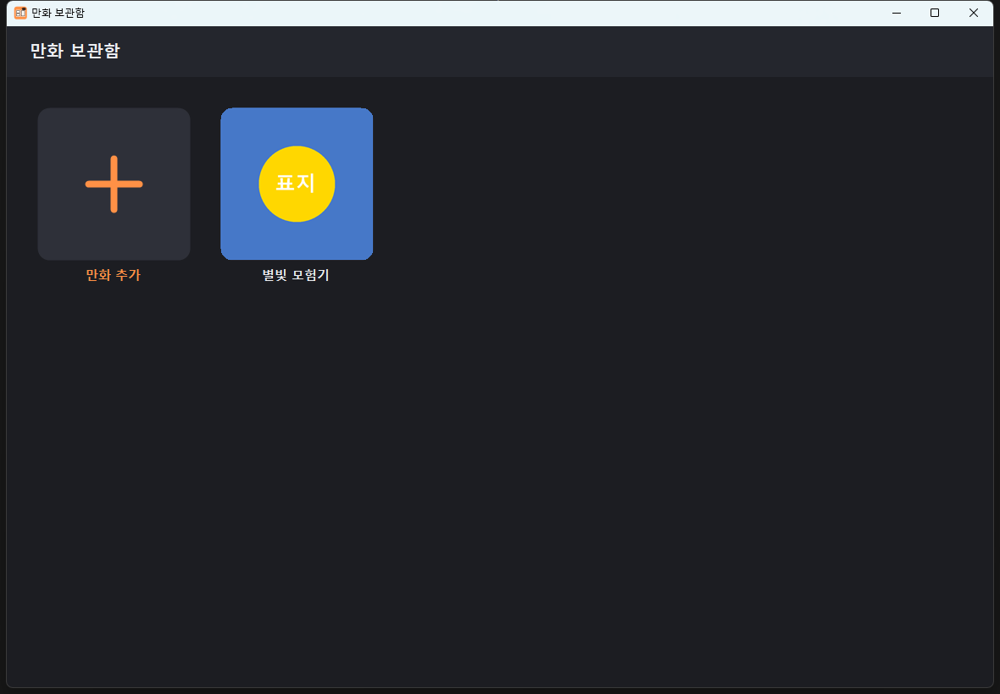
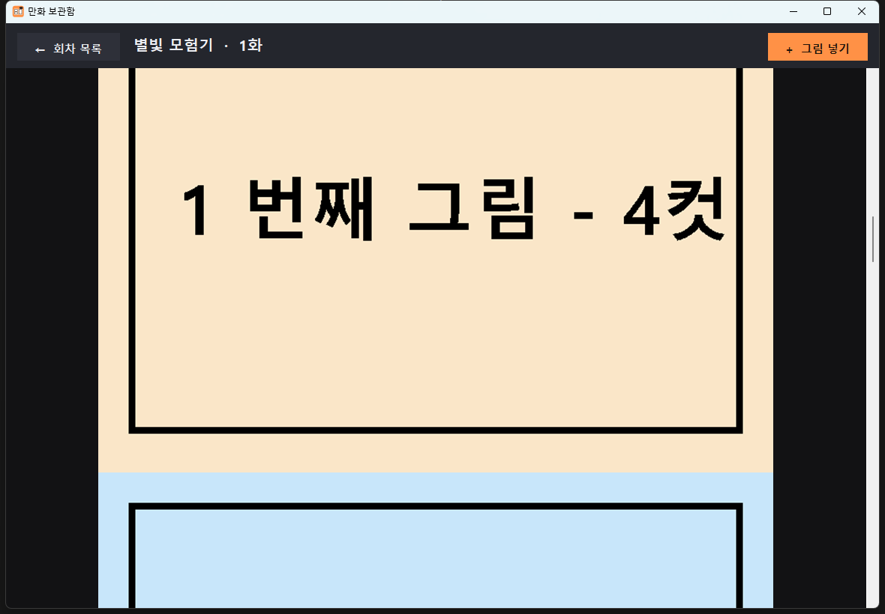
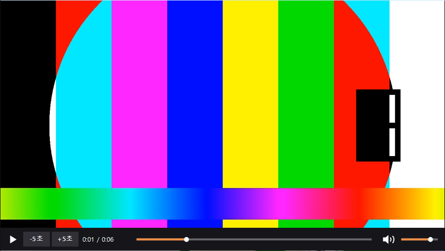
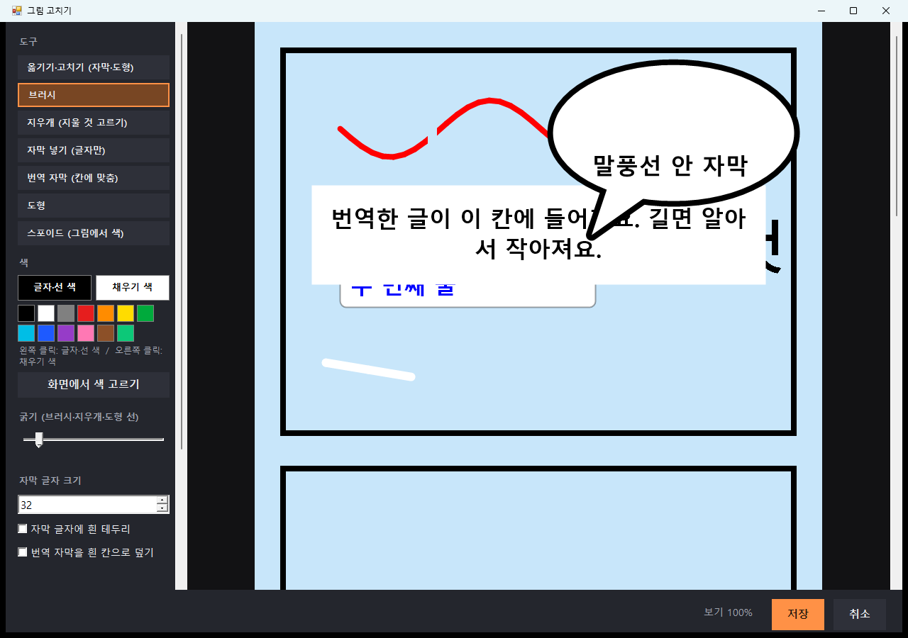

이런 걸 할 수 있어요
만화 모아 두기
정사각형 썸네일 카드로 만화를 모아요. 움직이는 gif 썸네일도 돼요. 제목·설명으로 검색해요.
웹툰처럼 보기
휠로 내려 보고, Ctrl+휠로 확대·축소, 끌어서 옮기기. 위쪽 회차 줄과 이전·다음 화 단추로 넘겨요.
그림·영상·음악
그림, 움직이는 gif, 영상(소리까지), 화마다 배경 음악을 넣을 수 있어요.
그림 고치기
브러시·지우개·자막·번역 자막·말풍선 같은 도형·스포이드. 원래 그림은 그대로 둬요.
친구와 주고받기
만화를 꾸러미 파일 하나로 내보내고, 받은 꾸러미로 바로 추가해요.
안심하고 쓰기
만화는 내 컴퓨터에만 저장돼요. 새 판 확인 말고는 인터넷을 쓰지 않고, 내 정보를 보내지 않아요.
화면




시작하는 법
- 위의 무료로 받기를 눌러 zip 파일을 받아요.
- zip 을 원하는 곳(문서, 바탕화면 등)에 풀어요.
- 만화 보관함.exe 를 두 번 누르면 열려요. 처음 열면 사용법이 나와요. (나중에는 F1)
처음 열 때 윈도우가 'Windows의 PC 보호' 창을 띄우면 추가 정보 → 실행을 누르면 돼요. 개인이 만든, 서명이 없는 프로그램이라 뜨는 안내예요.
만화는 프로그램 옆에 생기는 '자료' 폴더에 저장돼요. 프로그램을 옮길 때는 '자료' 폴더도 같이 옮겨 주세요.